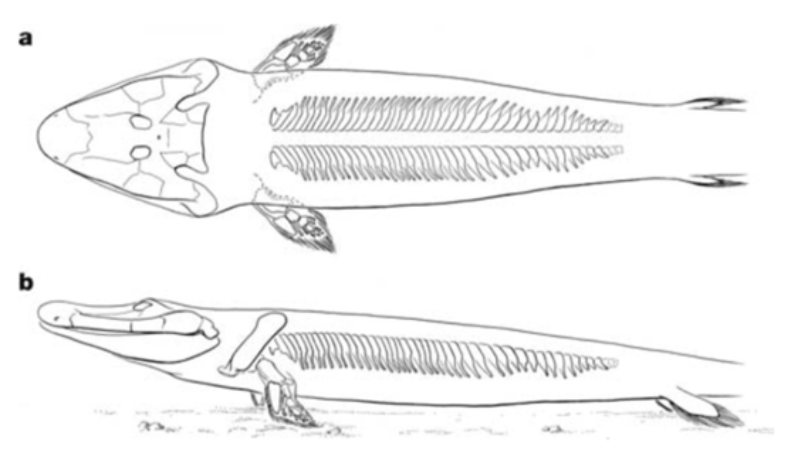

terrestrialisation
·
15 mai 2020
La terrestrialisation des vertébrés
Reconstitution d’un paysage de la transition Dévonien/Carbonifère avec au premier plan Acanthostega (tétrapode aquatique du Dévonien) se hissant sur un tronc. © Raúl Martin
Les tenants de la théorie de l’évolution nous disent qu’un poisson doit subir de grandes modifications pour s'adapter à la vie sur terre. [...] Les branchies devraient se transformer en poumons et les nageoires acquérir les caractéristiques des pattes pour pouvoir porter le poids du corps. [...] Au moment où le poisson a commencé à ramper sur terre, les nageoires sont progressivement devenues des pattes.
Cette article a été édité par soucis de taille et de clareté.
Chloé Pereira
19/05/2020 23:59:59
« Ces poissons ne manquent pas d’air ! »
Je me permets de commenter votre publication car le finalisme de vos propos m’a quelque peu fait bondir de ma chaise. En effet, les poissons ne se sont pas adaptés à la vie sur Terre mais ce sont leurs adaptations qui leur ont permis de coloniser la Terre. Tout d’abord, il est erroné de penser que la terrestrialisation a commencé par les vertébrés, il y a eu plusieurs étapes dans l'expansion des organismes sur le milieu continental. Ce sont les végétaux qui sont sortis les premiers des eaux à partir de l’Ordovicien moyen, puis les arthropodes, les mollusques, les annélides et enfin les vertébrés. Mais alors, de quelle manière la terrestrialisation des vertébrés s’est-elle effectuée me diriez-vous ?
Fig 1: Empreinte fossile de cœlacanthe (au-dessus) et une espèce vivante Latimeria chalumnae (en dessous). (Guéguen, 2016)
Chez les Vertébrés, ce sont les poissons qui ont initié la sortie des eaux. Mais il n’y a pas eu de « branchies qui se sont transformées en poumons » ou je ne sais quelle autre idée. Les dipneustes apparus au Dévonien sont par ailleurs équipés de branchies et de poumons ! Mais revenons un petit peu plus tôt, au Silurien avec les sarcoptérygiens. Ce sont des organismes pourvus de narines internes, nageoires pectorales et pelviennes en forme de palette natatoire, et de poumons (Guéguen, 2016). Ces poissons se servaient sûrement de leurs nageoires pour nager mais, tout comme les Sarcoptérygiens actuels, également pour marcher dans le fond de l’eau (Campbell, et al., 2012). D’après Jean-Sébastien Steyer, notre vision de l’évolution est très anthropocentrique et cartésienne avec les « pattes pour marcher » et « les nageoires pour nager » (Guéguen, 2016).
Fig 2: Cladogramme de parenté entre les tétrapodes et les « poissons », d’après Sébastien Steyer 2009. (Guéguen, 2016) [modifié]
À la fin du Dévonien cependant, la diversité des sarcoptérygiens a commencé à décroître et il n’en reste plus que trois lignées aujourd’hui donc les cœlacanthes [fig.1]. Et ne prononcez surtout pas les mots « fossile vivant », sauf pour parler de votre grande-tante Janine ! Jean-Christophe Géguan définit ces organismes comme étant des « espèces qui ont traversé le temps sans voir leur morphologie externe se modifier » (Guéguen, 2016). Les dipneustes, évoqués plus haut, qui sont dotés de branchies et de poumons représentent une autre lignée des sarcoptérygiens. Ce qui aura permis à Jean-Sébastien Steyer de déclarer que ces poissons ne manquaient pas d’air (Steyer, 2009). Enfin, la troisième lignée est celle des tétrapodes apparus durant le Dévonien moyen dont font partis les humains. les premiers tétrapodes, également appelés tétrapodomorphes, sont issus des sarcoptérygiens [fig.2] et leurs adaptations ont permis une colonisation de la terre ferme. Tous les tétrapodes du Dévonien ne pouvaient pas ramper. Le milieu terrestre impose des contraintes différentes du milieu aquatique, certes, mais pas seulement concernant la respiration ou la locomotion, mais également le soutien et le maintien du corps, une adaptation à l’audition, l’odorat…
Fig 3: Le Tiktaalik roseae et ses caractéristiques. (Campbell, et al., 2012)
Lors de la découverte d’Eusthenopteron (-385Ma) ce fut comme trouver le « chaînon manquant » entre les poissons et les amphibiens avec des os crâniens et ses nageoires pectorales et pelviennes dont les structures sont proches de celles des tétrapodes cependant elles ne leur permettaient pas de marcher (Guéguen, 2016). Mais dans les années 2000, la découverte récente d’un fossile appelé Tiktaalik roseae (« grand poisson des rivières » en Inuit), daté du Dévonien supérieur (-375 Ma) est considéré comme le sarcoptérygiens le plus proche des tétrapodes (Guéguen, 2016) mais il constitue une forme transitoire des poissons vers les tétrapodes.
Fig 4: Les étapes de l’apparition des membres avec doigts. Les couleurs sont une fantaisie de l’artiste. (Campbell, et al., 2012)
Fig 5: Reconstruction squelettique interprétative de Tiktaalik. (Daeschler, et al., 2006)
C’est un elpistostégalien qui était doté de côtes élargies et orientées latéralement, de poumons, d’un crâne aplati et d’une dorsalisation des yeux mais également avec des caractéristiques des poissons comme des nageoires (qui commencent à se réduire), des branchies et un corps couvert d’écailles [fig.3].
T. roseae avait également un cou et des épaules qui lui permettaient de bouger sa tête mais surtout ses nageoires pectorales avaient la même organisation que les membres des tétrapodes cad un os (l’humérus) suivi de deux (radius et ulna), se prolongeant eux-mêmes par un groupe d’osselets comprenant le poignet [fig.4]. Cependant, il est fort peu probable que Tiktaalik roseae ait pu marcher mais l’organisation de ses nageoires nous laisse penser qu’il aurait pu se soulever lorsqu’il était dans l’eau [fig.5] (Campbell, et al., 2012).
On retrouvera ensuite Acanthostega et Ichtyostega (-360Ma, Dévonien supérieur) qui sont les deux tétrapodes les plus connus. Dans les années 1990, une paléonthologue, Jennifer Clarck découvrit que Ichtyostega avait une colonne vertébrale qui ne permettait d’effectuer que des mouvements ondulatoires, que ses membres inférieurs avaient une forme de palettes natatoires orientées vers l’arrière à l’image de mes membres inférieurs des phoques et que ses membres antérieurs n’avaient pas la capacité d’effectuer des flexions-extensions. Par ailleurs, cette chercheuse a pu observer que les membres de Acanthostega étaient peu adaptés à la marche et encore bien rigides mais lui pouvaient peut-être lui permettre se hisser sur des branches immergées. Cette espèce n’est d’ailleurs plus présente au Carbonifère. Cela pourrait s’expliquer par la crise environnementale importante qui a eu lieu à la fin du Dévonien où 70% des espèces vivantes, et plus particulièrement marines ont disparu mais a épargné premiers vertébrés tétrapodes. Cependant, c’est durant le Carbonifère que les cinq doigts standard tétrapodes sont apparus, Ichthyostega et Acanthostega en possèdaient respectivement sept et huit (Guéguen, 2016)
Fig 6: Cladogramme de l’évolution des tétrapodes depuis le sarcoptérygien, Eusthenopteron jusqu’au tétrapode Pederpes qui lui était capable de marcher. (Guéguen, 2016)
La figure 6 représente un cladogramme de l’évolution des tétrapodes depuis le sarcoptérygien. On peut y observer Pederpes (-345Ma) a été découvert par Jennifer Clarck en 2002 dans les collections Muséum d’Histoire naturelle de Cambridge où il y était depuis 1971 (il avait été confondu avec un poisson). Il serait le premier amphibien tétrapode présentant 4 pattes marcheuses fonctionnelles, chacunes dotée de 5 doigts. Il est capable de marcher un petit peu à la manière d’un crocodile et devait partager son temps entre la terre ferme et l’eau (Guéguen, 2016). Grâce à cette découverte, J. Clarck a pu combler un petit peu plus une lacune paléontologique dans les archives fossiles des vertébrés, la « lacune de Romer » qui couvre 15 millions d’années entre la fin du Dévonien et le Carbonifère (Guéguen, 2016).
Comme vous l’aurez compris, la terrestrialisation des vertébrés a été un processus assez brutal et assez long, à partir du Dévonien. Il y a fallu diverses évolutions chez des animaux qui ont disparus aujourd’hui et chez d’autres que l’on peut encore retrouver aujourd’hui comme dans le cas du cœlacanthe ou des dipneustes. Comme l’a dit Jean-Christophe Guéguen dans son livre Biodiversité et évolution du monde animal : une brève histoire des animaux « La Nature est économe et elle bricole avec les pièces qu’elle a à sa disposition. ». C'est l’acquisition de nouvelles caractéristiques par les animaux qui a permis la colonisation de la Terre et non pas la colonisation de la Terre qui leur a permis d’acquérir ces nouvelles caractéristiques. J’espère avoir été claire dans mes propos et que vous comprenez désormais un petit peu plus la terrestrialisation des vertébrés pour laquelle il reste encore de énormément à découvrir.
Bibliographie: